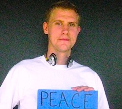

Friends,
Earlier this month, we wrote you about one of our International FOR (IFOR) Fellowship School applicants, Andrei Trubceac, whose visa was initially denied -- but with your help, Andrei was able to attend.
Last week, another IFOR Fellowship School member, Rosario Quiroz, alerted you that her friend and former college classmate, Israel Rodriguez-Rubio, was facing deportation from the United States.
This morning, with your help, "Izzy" was released to humanitarian parole after a month in detention! THANK YOU! However, the journey is not over. Izzy writes:
I wish I could say that this is a truly happy moment for me, but as many of you know my brothers and sisters are still locked up in detention -- criminalized for being human and trying to pursue happiness. And my sister Rocio now finds herself in danger as she was so covertly taken away from us yesterday. Today, I cannot rejoice because today we have to continue to fight for all of them -- my family, too. It may be too much of me to ask, for you have already done so much, but I plead you to continue supporting us. Our lives truly depend on it. We are all human.
We urge you to continue to stay updated on the Dream 30 and to respond to action alerts via the Dream Activist website.
Andrei and Rosario are two of four extraordinary human rights activists who have been selected from more than 200 applications by outstanding young global leaders to participate in this year's IFOR Fellowship School. Today we introduce you to all four students who just began a nine-week intensive nonviolence training curriculum at FOR-USA's headquarters in Nyack, NY: Amos Furaha, Rosario Quiroz, Nurana Rajabova, and Andrei Trubceac.

We think hosting this training of Andrei, Rosario, Amos, and Nurana as tomorrow's global nonviolence leaders is so important, we're taking a big risk: We still need your help to fully fund the rest of the training!
Make a tax-deductible donation now to help support FOR-USA and IFOR's Fellowship School. We need $20,000 more in order to meet our budget.
And read on to learn more about these incredible young leaders!
Amos Furaha: Rwanda, age 23
 Amos is the co-founder and project manager for Live Again Rwanda, an organization providing counseling and training for future counselors in Rwanda. Prior to his work with Live Again, Amos was involved in several projects promoting reconciliation, unity, and forgiveness throughout Rwanda. Amos is the co-founder and project manager for Live Again Rwanda, an organization providing counseling and training for future counselors in Rwanda. Prior to his work with Live Again, Amos was involved in several projects promoting reconciliation, unity, and forgiveness throughout Rwanda.
He has worked with Peace and Love Proclaimers (PLP) for several years, and was one of the main organizers for The Walk to Remember in 2011 and 2012. His current position with PLP is the chief officer of the Conflict Resolution and Peace Building Department.
Amos recently designed and implemented his own radio show on Amazing Grace Christian Radio. The focus of the show is to provide a place for Rwandans to discuss and debate topics related to reconciliation, unity, and forgiveness. Amos is also the founder and managing director for his own organization, Umurage Networking Group, an organization focused on connecting young Rwandans with potential job opportunities and career placements.
Rosario Quiroz: Mexico/U.S., age 24
 Rosario was born in Torreon, Coahuila, Mexico. She moved to the United States at the age of seven and grew up in North Carolina. Rosario studied sociology and sustainable development at Columbia University. She first became involved in addressing social justice through an intersectional lens at the National Latina Institute for Reproductive Health, where she worked with the Community Mobilization Dept. Rosario was born in Torreon, Coahuila, Mexico. She moved to the United States at the age of seven and grew up in North Carolina. Rosario studied sociology and sustainable development at Columbia University. She first became involved in addressing social justice through an intersectional lens at the National Latina Institute for Reproductive Health, where she worked with the Community Mobilization Dept.
She now lives in Vancouver, Washington, where she worked with Momentum Alliance, a youth-led non-profit in Portland, Oregon, seeking to mentor future social justice leaders. She has also been an active part of Oregon DreamActivist, an undocumented-led organization she connected with through the New York State Youth Leadership Council and her involvement there as an undocumented youth.
Rosario is interested in the dynamics that foster social change and move society towards a more sustainable, equitable, and humane reality, as well as making a practice in peace and nonviolent resistance more accessible to underrepresented communities that constantly deal with injustice.
Nurana Rajabova: Azerbaijan, age 25
 Nurana holds a bachelor's degree in English and literature. After graduating from university, she engaged in various community development projects that shaped and reaffirmed her future career goals of pursuing a career in conflict transformation and peacebuilding. Nurana holds a bachelor's degree in English and literature. After graduating from university, she engaged in various community development projects that shaped and reaffirmed her future career goals of pursuing a career in conflict transformation and peacebuilding.
She has completed online courses in peace studies from the United States Institute of Peace and attended the Summer Peacebuilding Institute at Eastern Mennonite University. Nurana is also a member of the International Peace Researchers Association. As a great believer in peace, her main goal is to contribute to a culture of peace through education.
Andrei Trubceac: Romania/Moldova, age 25
And finally, Andrei: He is a graduate student in international development studies, and his masters thesis was focused on the developmental and peacebuilding challenges in states experiencing secessionist processes. Andrei aims to understand the functionality of the de facto states and the shifting nature of sovereignty.
He was a project officer in the Social Cohesion Research and Early Warning Division at the Council of Europe and has been involved with Romania's Peace Institute (PATRIR) since 2011 as part of the Department of Peace Operations. Andrei most recently completed a short term European Voluntary Service project called Human Rights Caravan in Georgia.
We hope you join us in welcoming these students to the IFOR/FOR-USA Fellowship School!
And please make a donation to help support the students as they study nonviolence this fall at FOR-USA's Shadowcliff headquarters. Thank you for your words in support of Andrei and Rosario's friend Izzy, and thank you for any financial contribution you can make.
Grace and peace,
Rev. Kristin Stoneking
Executive Director
Fellowship of Reconciliation
|